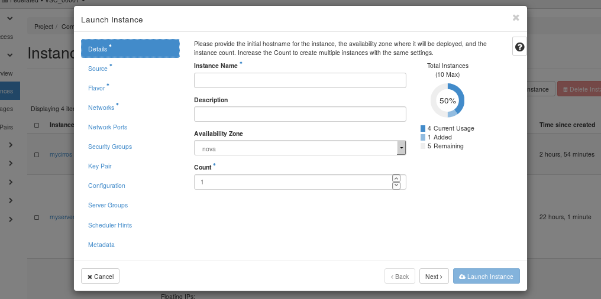
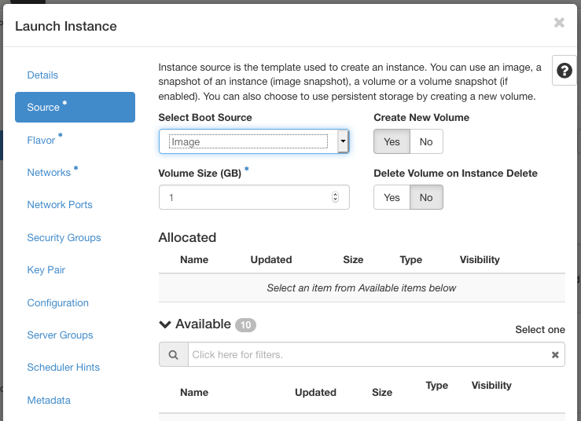
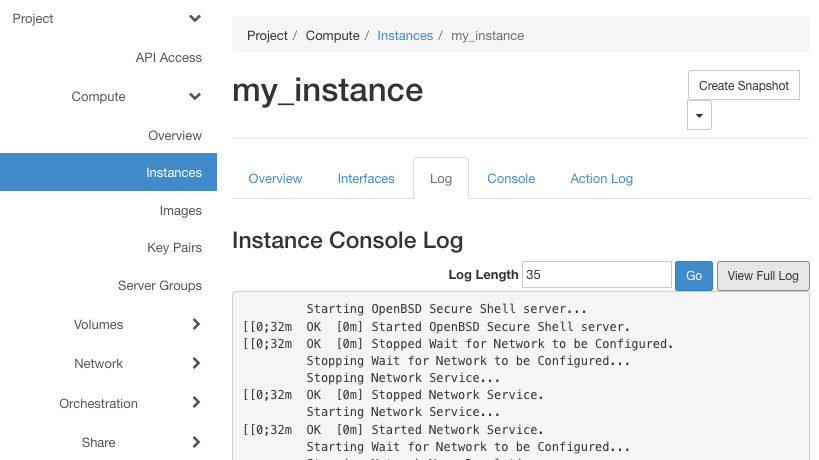

Launch and manage instances#
Instances are virtual machines that run inside the cloud. You can launch an instance from the following sources:
- Images uploaded to the Image service.
Note
Because images are read-only, any changes made while the instance is running will be lost when the instance is deleted, unless you choose to create a persistent volume for your instance when you launch it. Using a volume, the VM's state is saved, even when the current instance is deleted.
-
Images which you previously copied to a persistent volume. The instance launches from the volume.
-
Instance snapshots.
Launch an instance#
-
Open the Compute tab and select the Instances category.
The dashboard shows the list of existing instances with their name, IP addresses, flavor, status, power state, ...
-
Click Launch Instance.
-
In the Launch Instance dialog box, specify the following values:

Details tab#
Instance Name#
Assign a name to the virtual machine.
Tip
The name you assign here becomes the initial host name of the server. If the name is longer than 63 characters, the Compute service truncates it automatically to ensure dnsmasq works correctly.
After the server is built, if you change the server name in the API or change the host name directly, the names are not updated in the dashboard.
Server names are not guaranteed to be unique when created so you could have two instances with the same host name.
Description#
You can assign a brief description of the virtual machine.
Availability Zone#
Large-scale OpenStack systems may consist of multiple availability zones, which are groups of hypervisors connected to different power sources. By assigning instances to different availability zones, users can protect themselves against power failures. However, the VSC cloud consists of just a single zone, called .
Count#
To launch multiple instances, enter a value greater than . The default is 1.

Source tab#
Select Boot Source#
Your options are:
-
Image
-
Image snapshot
-
Volume
-
Volume snapshot
Depending on the type of boot source, the list of available items changes.
Create New Volume#
If you enable this option when launching from an image or instance snapshot, the image or snapshot will be copied to a volume. This way, the state of your instance persists after shutdown and reboot.
Flavor tab#
Specify the size of the instance to launch.
Note
The flavor is selected based on the size of the image selected for launching an instance. For example, while creating an image, if you have entered the value in the Minimum RAM (MB) field as 2048, then on selecting the image, the default flavor is CPUv1.small (see section instance type for more information). If a :exclamation: warning sign is displayed next to a resource for one of the flavors, that means that this flavor would exceed the project's quota for that resource, and therefore is not available.
Networks tab#
Add one or more networks to the instance.
Network Ports tab#
Activate the ports that you want to assign to the instance.
Security Groups tab#
Activate the security groups that you want to assign to the instance.
Security groups are a kind of cloud firewall that define which incoming network traffic is forwarded to instances. See section configure access for more information. The default security group is assigned to the instance automatically.
Key Pair tab#
Specify a key pair.
If the image uses a static root password or a static key set (neither is recommended), you do not need to provide a key pair to launch the instance.
Configuration tab#
Specify a customization script that runs after your instance launches.
Server Groups tab#
You can organize instances into groups with a scheduling policy. With an "affinity" policy, OpenStack will try to schedule those instances on the same hypervisors, which is useful for instances that need to communicate with each other a lot. With an "anti-affinity" policy, instances will be scheduled on different hypervisors, which you might use for instances that provide redundant copies of a single service.
Scheduler Hints tab#
By providing scheduler hints, you can get more fine grained control over which hypervisor your instances are scheduled on.
Metadata tab#
Add Metadata items to your instance.
- Click Launch Instance
The instance starts on a compute node in the cloud.
Note
If you did not provide a key pair, security groups, or rules, users can access the instance only from inside the cloud through VNC. Even pinging the instance is not possible without an ICMP rule configured.
You can also launch an instance from the Images or Volumes category when you launch an instance from an image or a volume respectively.
When you launch an instance from an image, OpenStack creates a local copy of the image on the compute node where the instance starts.
For details on creating images, see Creating images manually in the OpenStack Virtual Machine Image Guide.
Connect to an instance using SSH#
Before you can connect to an instance using SSH, you must set up a floating IP for it, as discussed in section floating-ip. Recall that only ports 50000 to 60000 of the floating IP's can be directly reached from outside the UGent network.
Note
When you try to connect to a new instance using a port that was previously forwarded to a different instance --- either due to a change in the port forwarding configuration, or because an old instance was deleted and replaced --- your SSH client will show an error message because the "host key" of the new instance doesn't match the known previous key. Section explains how to handle such errors.
Note
If you want to access ports outside the public range, you'll need to connect to the UGent login node login.hpc.ugent.be first, and hop to your instance from there. To make this work without storing the required private key for the instance in your VSC storage space, you need to set up an SSH agent with key forwarding locally, i.e. on the machine where you store the private key of an authorized keypair for the instance. Section 2.1.4 of the HPC introduction explains how to set this up (hpcugent.github.io/vsc_user_docs).
- (Only if using a port blocked by the UGent firewall, see the note
above:) Use your VSC account to connect to the UGent login node,
using the
ssh -Aoption to enable agent forwarding:
ssh -A vsc12345@login.hpc.ugent.be
-
Copy the address of the floating IP where your instance can be reached. In our example, the address is 193.190.85.40.
-
Connect to the instance. Use OpenSSH's
-poption to specify the port where the instance's SSH server can be reached, e.g. for port 50022:
ssh -A -p 50022 ubuntu@193.190.85.40
When you run the above command, your SSH client may display warnings or error messages. The section Host Keys Host Keys explains the meaning of these messages and how you should deal with them.
Info
The images we provide do not allow SSH logins for the root user.
There is a default user instead, who can get administrative
privileges using sudo. In our example, we have used the username
ubuntu for Ubuntu images. Attempting to log in as root will return
an error message with the proper user name.
Host keys#
When connecting to instances using SSH, you will sometimes see warnings or errors related to "host keys". This section briefly explains the meaning of those errors, and how to deal with them.
When you try to connect to an instance, you use the private key of your SSH keypair to prove your identity to that instance. If you do not have access to the right secret key, you can not prove your identity, at which point the your instance's SSH server will deny access. In the same way, the server must prove its own identity to you, using its own keypair or "host key". Without such a verification procedure, third parties on the network between you and the instance could perform a so-called man-in-the-middle-attack, where they intercept the communication between you and the server you want to reach and steal valuable information.
To prevent such man-in-the-middle attacks, the SSH client on your system stores the host key for every IP address you have connected to, and verifies the key the next time you try to connect to that address. If all goes well, this check is silently performed in the background, but there are a number of situations where the check fails. In this case, you have to look up the host key of your instance in the OpenStack dashboard to verify that the connection is secure.
Looking up an instance's host key#
In order to verify a host key, it suffices to compare the key's fingerprint, a short alphanumerical sequence computed from the keys content. You can use the Dashboard to look up the host key fingerprint for an instance as follows:
-
Open the Compute tab and select the Instances category.
-
Click on the name of the instance you want to connect to.
-
Click Log

-
Click . You are taken to a new page with a long text listing.
-
Search for the words -----BEGIN SSH HOST KEY FINGERPRINTS----- to find the log file section containing the host key fingerprints, for example:
<14>Jun 6 09:57:01 ec2:
#############################################################
<14>Jun 6 09:57:01 ec2: -----BEGIN SSH HOST KEY FINGERPRINTS-----
<14>Jun 6 09:57:01 ec2: 1024
SHA256:gCa0hZAaOnpzxYM5WnAZINuZTI5NAoqd41U/dtxeGKE root@my-instance
(DSA) <14>Jun 6 09:57:01 ec2: 256
SHA256:nyujUIF37c674FPSkDdz0xgAU6S39UWbmMzBPmdmCmg root@my-instance
(ECDSA) <14>Jun 6 09:57:01 ec2: 256
SHA256:Mcznquek1A3BFz6KEXSxsivpdkX1mY3LnymEA7C8Xxg root@my-instance
(ED25519) <14>Jun 6 09:57:01 ec2: 2048
SHA256:4DagYc9cZvANkSjbTL0pB+3ULqHg09zW4E8wvDrB4Do root@my-instance
(RSA) <14>Jun 6 09:57:01 ec2: -----END SSH HOST KEY
FINGERPRINTS----- <14>Jun 6 09:57:01 ec2:
#############################################################
In this example, the fingerprints are character sequences starting with "SHA256", such as the ECDSA key fingerprint SHA256:nyujUIF37c674FPSkDdz0xgAU6S39UWbmMzBPmdmCmg. The following sections describe the most common cases where you'll need these fingerprints.
The following examples show output and commands for OpenSSH, the most common client on Linux and macOS. If you are working from a windows system using using PuTTY, we refer to PuTTY section of the windows version of the introduction to HPC for the corresponding warning messages.
Connecting for the first time#
The first time you connect to a new ip address:port combination, your SSH client does not know the host key for this address, and therefore it can't verify the identity of the server. When using OpenSSH, the warning looks as follows (again using address 193.190.85.40 and port 50022 as an example):
The authenticity of host '[193.190.85.40]:50022
([193.190.85.40]:50022)' can't be established. ECDSA key fingerprint
is SHA256:nyujUIF37c674FPSkDdz0xgAU6S39UWbmMzBPmdmCmg. Are you sure you
want to continue connecting (yes/no)?
Verify the fingerprint in order to make sure that it is safe to proceed:
-
Look up the fingerprint of the instance you want to access, according to the procedure described in the section .
-
Verify that the fingerprint you find in the Dashboard matches the fingerprint shown in the warning message.
In this example, we see that the ECDSA key fingerprint reported by the SSH client matches the fingerprint of our instance from the previous section, namely
SHA256:nyujUIF37c674FPSkDdz0xgAU6S39UWbmMzBPmdmCmg
-
If the fingerprints are identical, type "yes" to log in.
Warning
If the fingerprints do not match, type no, and contact cloud@vscentrum.be.
New instance at a known address#
Another case where the host key verification fails, is when you try to access a new instance at an IP address and port previously used by another instance. This can happen if you modify your port forwarding configuration, or if a running instance connected to a certain port is deleted and replaced by a new one. In this case, OpenSSH will show a warning such as this:
@@@@@@@@@@@@@@@@@@@@@@@@@@@@@@@@@@@@@@@@@@@@@@@@@@@@@@@@@@@
@ WARNING: REMOTE HOST IDENTIFICATION HAS CHANGED! @
@@@@@@@@@@@@@@@@@@@@@@@@@@@@@@@@@@@@@@@@@@@@@@@@@@@@@@@@@@@ IT IS
POSSIBLE THAT SOMEONE IS DOING SOMETHING NASTY! Someone could be
eavesdropping on you right now (man-in-the-middle attack)! It is also
possible that a host key has just been changed. The fingerprint for the
ECDSA key sent by the remote host is
SHA256:hI2HcqFxsCKwEauq2QvBmgDN4nCPjllaRsYoCb7tJQw. Please contact your
system administrator. Add correct host key in [...]/.ssh/known_hosts
to get rid of this message. Offending ECDSA key in
[...]/.ssh/known_hosts:57 ECDSA host key for [193.190.85.40]:50322
has changed and you have requested strict checking. Host key
verification failed.
The file known_hosts in your OpenSSH configuration directory contains a list of all hosts you have previously connected to, together with their host keys. The warning above tells you that the server you are connecting to is not using the same key anymore. In this case, you should take the following steps:
- Look up the fingerprint of the instance you want to access, according to the procedure described in the section Looking up an instance’s host key.
- Verify that the fingerprint you find in the Dashboard matches the fingerprint shown in the warning message.
- If the fingerprint matches, the new key is legitimate. Remove the previous known key from the known_hosts file as follows (still using address 193.190.85.40 and port number 50322 as an example):
ssh-keygen -R [193.190.85.40]:50322
Warning
If the fingerprint does not match, do not attempt to connect, and contact cloud@vscentrum.be.
Track usage for instances#
You can track usage for instances for each project. You can track costs per month by showing meters like number of vCPUs, disks, RAM, and uptime for all your instances.
-
Open the Compute tab and select the Overview category.
-
To query the instance usage for a period of time, select a time range and click .
-
To download a summary, click Download CSV Summary.
Create an instance snapshot#
-
Open the Compute tab and select the Instances category.
-
Select the instance from which to create a snapshot.
-
In the actions column, click Create Snapshot.
-
In the Create Snapshot dialog box, enter a name for the snapshot, and click Create Snapshot.
The Images category shows the instance snapshot.
To launch an instance from the snapshot, select the snapshot and click Launch. Proceed with launching an instance.
Manage an instance#
-
Open the Compute tab and select the Instances category.
-
Select an instance.
-
In the menu list in the actions column, select the state.
You can resize or rebuild an instance. You can also choose to view the instance console log, edit instance or the security groups. Depending on the current state of the instance, you can pause, resume, suspend, soft or hard reboot, or terminate it.
Difference between suspend, pause, shelve, shut off, delete#
Pause
Stores the state of the VM in the (RAM) memory.
Suspend
Stores the state of the VM on the disk, all memory is written to disk, and the server is stopped.
Shut off
The server is powered down by the user, either through the OpenStack Compute API, or from within the server by issuing a shutdown -h command. In this state the user retains all computational resources associated with the VM. The instance can be later restarted.
Shelve
Shelving stops the instance and takes a snapshot of it. Then depending on the value of the shelved_offload_time config option, the instance is either deleted from the hypervisor (0), never deleted (-1), or deleted after some period of time (> 0). Shelve preserves all associated data and VM resources but does not retain anything in memory.
Delete
The VM is deleted and removed from OpenStack together with any associated processes and resources. However, for instances backed by a persistent volume, this volume is not deleted. When such an instance is deleted, you can restore it by launching a new instance from the volume, or delete the volume as well (see section delete a volume).
For more details see the OpenStack documentation on Virtual Machine States and Transitions and Server concepts.